| >Main Admin Page >Email Administration Guide Index |
The pop account screen lets you:
This simply jumps you to the New POP Account Page.
As the administrator it may become necessary to change the password for one of your users because they have forgotten it, or more likely, they recently changed it and now don't know what they changed it to.
Using the change password button for any user will take you the modify user page
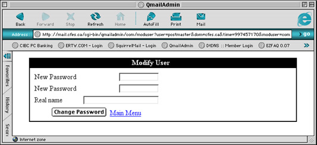
You are required to enter the new password for the user twice to ensure you don't make a error while entering it. The Real Name field is for the administrators reference only and will not effect their email in any way.
Choosing to delete a user brings up the delete confirmation page.
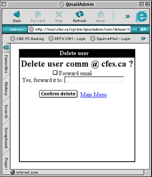
You can also choose to create a forwarding account to replace the pop account when it is being deleted. To do so simply enable Forward email and enter the address the account will be forwarding to.
It is a means of receiving any and all email sent to your domain regardless of if the particular account exists or not. For instance, lets say there is an email account called wazzerjbouski@yourdomain.com... people may make a mistake typing in the email address. Making a catch all account will ensure that someone at your domain gets the message.
If you were the only user of your domain you could choose to make only one email account in the domain and set it as the catch all. Doing this makes it possible for you to make up email addresses at will. Note that sub accounts are also available meaning that all users have a virtually limitless number of accounts available to them.
In general it is not recommended that you create "Catch All" accounts if you have more users in your domain than yourself as a simple typo would result in the catch all account getting the message instead of it being bounced back to the original sender and they then correcting their mistake and re-sending it.
Setting the "catch-all"
By default, the catch-all account is disabled. To enable it click the button under CatchAll Account for the account that will be the Catch all account. If you return to the pop account menu you should see the account you select now says default under the CatchAll Account heading.
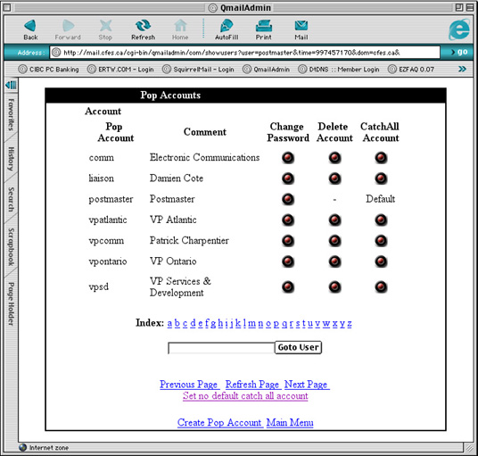
Clearing the "catch-all"
To clear the catch all account simply click the Set no default catch all account link at the bottom of the page. If you return to the pop accounts page you will know that it has been cleared because it no longer says default under the CatchAll Account heading.
The aliases page lets you do the following:
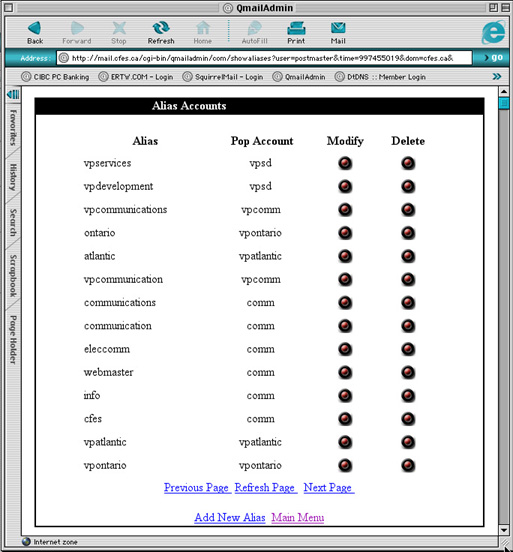
The aliases page shows you the alias accounts that have been created for your domain.
The Add New Alias command jumps you to the Add Aliases page.
When you select the modify button for a user you will be presented with the following page.
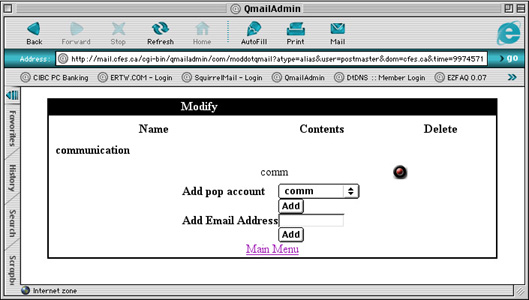
Once a alias or forward has been created it is effective the same except for which list it appears under off of the main menu. If the account was created as an alias is will always appear under the alias menu, if the account was created as a forward it will always appear as a forward.
This page allows you to add additional destinations for the account in question. If you would like to add additional email accounts that this account fowards to enter them in the Add Email Address field and select Add. If you wish to have this alias deliver email to additional local accounts select them from the drop down menu and select Add.
The following shows the result of adding an additional local alias (vpsd) and forwarding email account (other@domain.com).
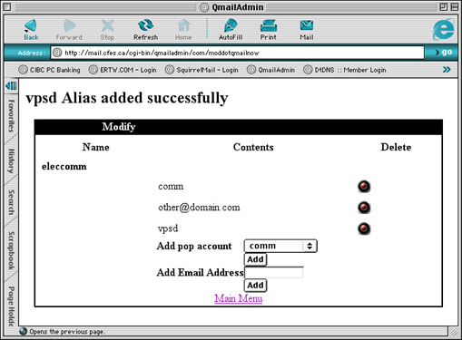
If you wish to delete any of the forwards or aliases for the account simply select the delete button on the appropriate line which matches the account you with to remove.
To delete an alias altogether simply select the delete button from the appropriate line from the main alias page. You will be presented with a confirmation page where you can choose to confirm the deletion or cancel as shown below.
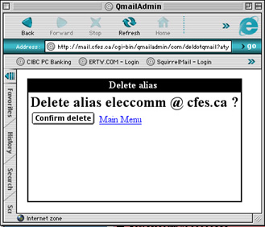
The Forwards page will let you do the following:
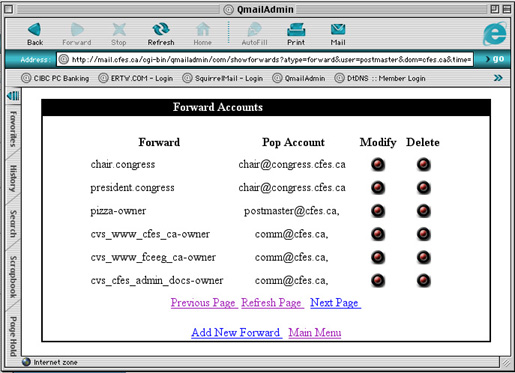
The Add New Forward Link simply takes you to the New Forwards page.
Modifying forwards is identical to modifying aliases. See the section above on modifying aliases.
As with deleting an alias if you delete an forwarding account you will be presented with a confirmation page which allows you to either confirm the deletion or cancel.
From the autoresponders page you can do the following:

Selecting the link for New Autoresponder simply takes you to the New Autoresponder page.
If you choose to modify an autoresponder you will be presented with the following page:
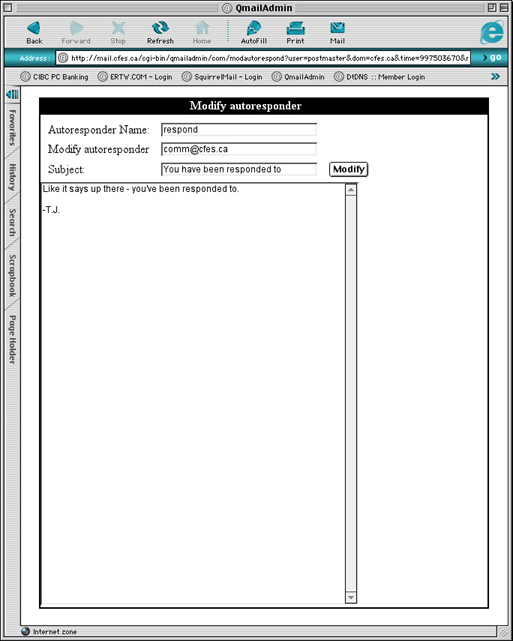
Autoresponder Name: The account that this autoresponder is associated with.
Modify autoresponder: The email address that the message is forwarded to.
Subject: The subject of the message received by the person who sends a message to this autoresponder account.
Message: The body of the message received by the person who sends a message to this autoresponder account.
Like the rest of the account types deleting an autoresponder account causes a confirmation message to be presented.
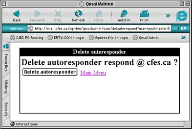
From the autoresponders page you can do the following:
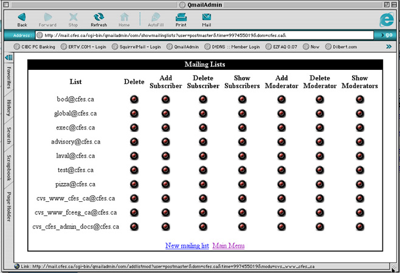
Subscriber: The general readers of the mailing list. These users will receive the messages posted to the mailing list.
Moderator: These are individuals who are given the ability to either limit who can subscribe to a given link or who can post to a given link.
For additional information about how mailing lists should be setup see the section on Creating Mailing Lists.
Clicking the New Mailing List link simply takes you to the New Mailing List page.
Currently QmailAdmin does not support modifications to the operations of mailing lists. It will only allow you to add and remove subscribers and moderators. If you wish to make changes to the operations of the list please contact your system administrator and they will be more than willing to assist you with your needs.
To add a subscriber simply select the Add Subscriber button for the appropriate list. This will present you with the following page:
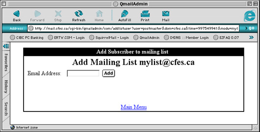
Email Address: The email address you wish to add to the list
To delete a subscriber simply select the Delete Subscriber button for the appropriate list. This will present you with the following page:
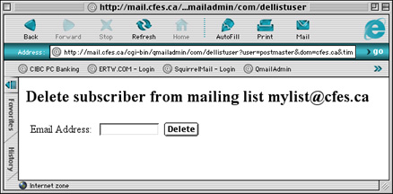
Email Address: The email address you wish to delete from the list
To view the subscriber list simply select the Show Subscriber button for the appropriate list. This will present you with the following page:
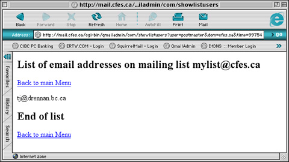
To add a moderator simply select the Add Moderator button for the appropriate list. This will present you with the following page:
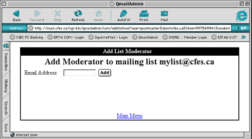
Email Address: The email address you wish to add as a moderator of the list
To delete a moderator simply select the Delete Moderator button for the appropriate list. This will present you with the following page:
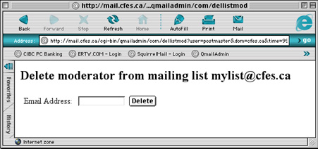
Email Address: The email address of the moderator you wish to delete from the list
To show the list of moderators simply select the Show Moderators button for the appropriate list. This will present you with the following page:

To delete a mailing list simply select Delete for the appropriate list. You will presented with a confirm page as shown where you can choose to confirm the deletion or return to the main menu.
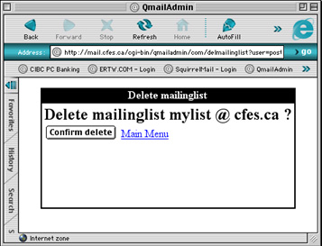
| >Main Admin Page >Email Administration Guide Index |